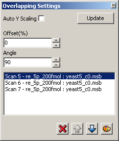
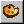
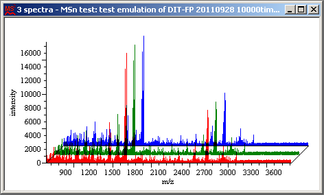
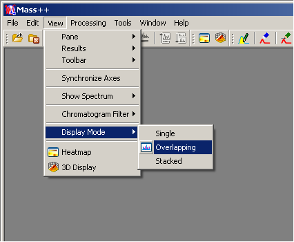
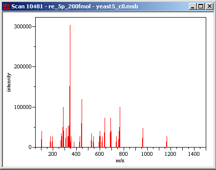
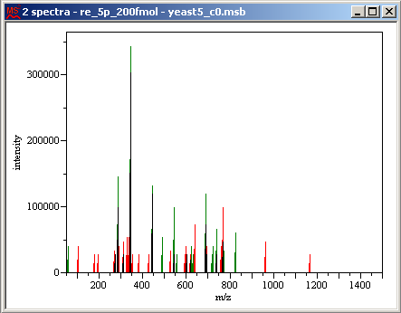

You can modify the Overlapping display mode.
Select [View] in the menu bar and then select [Pane] > [Overlapping Settings] from the drop down menu.
The Overlapping Settings pane appears.
Change the settings.
To remove a spectrum/chromatogram,
Select the spectrum/chromatogram to remove.
Click the icon.
To change the line color,
Select the spectrum/chromatogram whose color you want to change.
Click the  icon and select the color.
To shift at an angle,
Edit the values for [Offset(%)] and [Angle] and click [Update].
You can also change the values by clicking the buttons.
To change the display position of a spectrum/chromatogram,
Select the spectrum/chromatogram to move.
The spectrum/chromatogram displayed at the front (bottom) is listed at the top in the Overlapping Settings pane.
Click the icon or the icon to move the position.
When the icon is clicked the selected spectrum/chromatogram moves up in the Overlapping Settings pane and forward (down) in the display.
To display the maximum peak height of each spectrum/chromatogram as the same,
Check [Auto Y Scaling].
The Intensity scale is no longer shown.
The Overlapping display mode displays multiple spectra or chromatograms in a single view.
Select [View] in the menu bar and then select [Display Mode] > [Overlapping] from the drop down menu.
The Overlapping display mode can also be selected by clicking the
 icon in the toolbar.
icon in the toolbar.
In the Sample Tree, double-click the spectrum/chromatogram to be displayed.
In the Sample Tree, double-click the spectrum/chromatogram to be superimposed in the window.
The selected spectrum/chromatogram is added.
Repeat Step 3 to add more spectra/chromatograms.